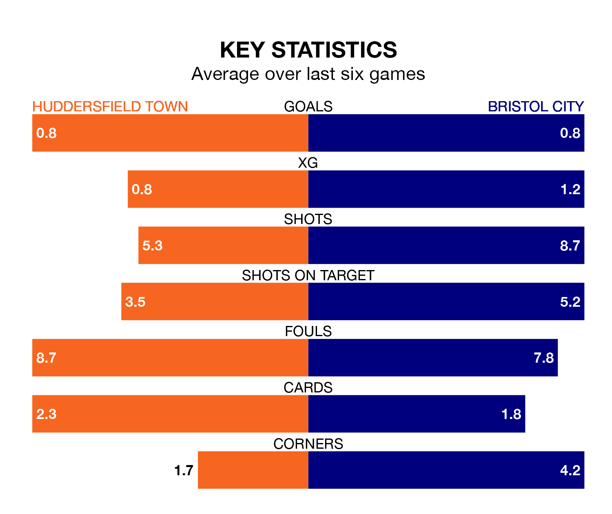

Huddersfield Town host Bristol City on Saturday at the John Smith's Stadium in the Championship.
In their last league match, on December 2, Huddersfield drew with Swansea City 1-1 away, with their goal scored by Benjamin Cabango (own goal).
City lost, 2-1 at home against Norwich City on Sunday, with Jason Knight scoring their goals.
In the last 10 years, Huddersfield and City have played each other on 13 occasions. Huddersfield won four of them, City eight, and they drew once.
On average, the Terriers scored 1.1 goals and the Robins 2.0 in those matches.
Their last meeting was on March 7, when they played out a 0-0 draw.
Huddersfield are 21st in the table after 19 games, of which they have won four and drawn eight, earning 20 points.
City are seven places ahead of Town in 14th, with seven wins and four draws putting them on 25 points.
The Terriers are in disappointing form in the Championship, with one win and three draws from their last six games.
With two wins and a draw over that period, the Robins' form is slightly better – they have taken seven points from 18, compared to the hosts' six.
With 18 goals in 19 games so far this season, Huddersfield are scoring at below the league average rate with 0.9 goals per game. And they are conceding more than average, letting in 31 goals at a rate of 1.6 per game.
The away team are also below average scorers, with 1.1 goals per game, compared to a league average of 1.4. They have also conceded 1.1 goals per game.
